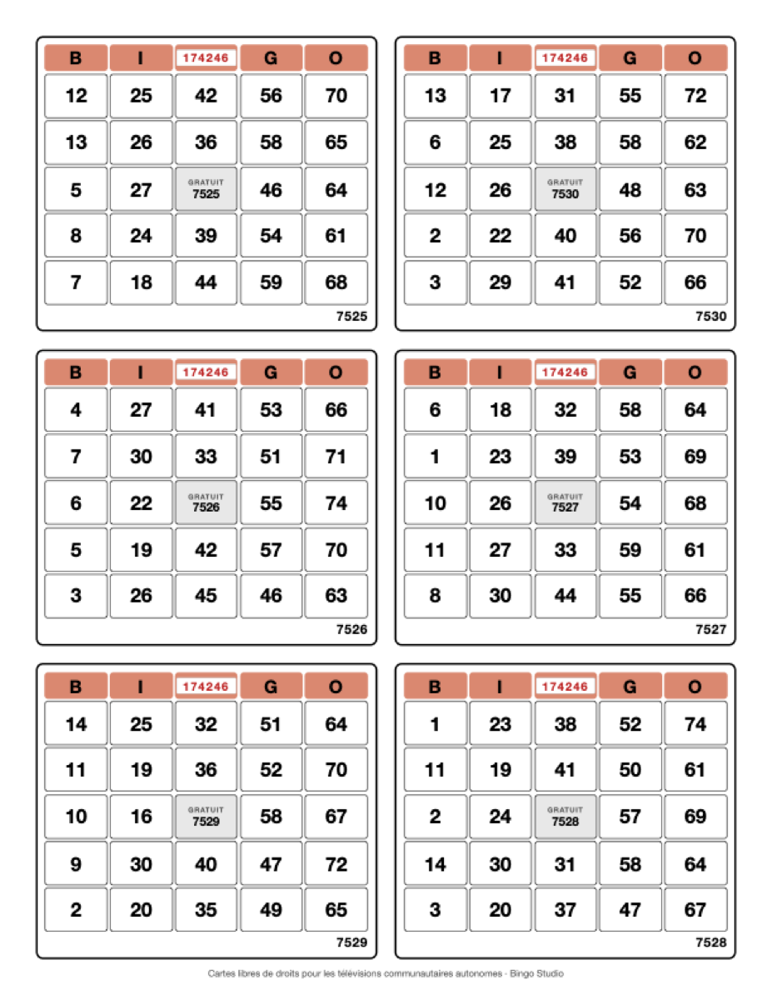

Grilles par feuille
De 1 à 18. Trois et six sont les plus courants au Québec. Le règlement n'impose rien là-dessus : ce sont des formats commerciaux, pas des obligations.
Guide détaillé
Ça se fait une fois, longtemps d'avance, en dix minutes. Après, tu n'y touches plus de l'année.
Dans la régie, bouton Imprimer les cartes, en haut. Tu choisis combien de grilles par feuille, quelle tranche de la base, la couleur des blocs et ton numéro de contrôle.
Un fichier, prêt tel quel. Rien à retoucher, rien à mettre en page.
Il imprime, il coupe, il assemble les livrets. C'est son métier — et c'est une obligation du règlement.

De 1 à 18. Trois et six sont les plus courants au Québec. Le règlement n'impose rien là-dessus : ce sont des formats commerciaux, pas des obligations.
Letter, Legal ou A4. Letter est le format nord-américain habituel. Là non plus, aucune dimension n'est imposée.
La tranche de la base que tu montes. Les cartes 1 à 300 pour dimanche, 301 à 600 la semaine d'après — ou toute la base d'un coup si tu ne commandes qu'une fois par année.
Seuls les blocs B-I-N-G-O prennent ta couleur. Le reste reste noir sur blanc : ça s'imprime mieux, ça coûte bien moins cher en encre et ça se lit de loin.
Sous les réglages, un résumé t'annonce d'avance ce qui va sortir : le nombre de feuilles, le temps de rendu, le poids du fichier. Aucune surprise à l'ouverture du PDF.
L'article 72 des Règles sur les bingos exige qu'une carte ordinaire porte un numéro de contrôle et un numéro de série, plus la mention « gratuit » au centre. Voici comment ils se placent.

En rouge, sur cartouche blanc, au centre du bandeau B-I-N-G-O. Il est le même sur toutes les cartes d'un même tirage — c'est lui qui identifie la série mise en circulation.
Change-le à chaque nouveau lot, comme la couleur du papier. Il permet de voir d'un coup d'œil qu'un joueur a bien les cartes de la semaine.
Tu le saisis toi-même. Laissé vide, rien ne s'imprime — c'est le cas si ton fournisseur l'appose lui-même sur presse.
Dans la case du centre, sous la mention GRATUIT, et répété en bas à droite. Il est propre à chaque carte : c'est lui que le joueur te donne au téléphone.
Deux endroits, parce qu'en fin de partie le centre de la carte disparaît sous les jetons.
Les numéros de face sont brassés sur l'ensemble du tirage avant d'être découpés en feuilles. Une feuille portera 4821, 193, 7702 — jamais trois numéros qui se suivent.
Deux raisons : personne ne peut deviner ce qu'il achète, et les grilles voisines ne se retrouvent pas dans la même main.
La répartition vient d'une graine. À graine égale, elle est rigoureusement la même. Si un carton se perd chez l'imprimeur, tu régénères exactement le même fichier.
La graine par défaut convient à tout le monde. Tu peux la changer, mais note-la : c'est elle qui permet de refaire le même lot.
Le PDF, et quatre précisions. C'est tout ce dont il a besoin pour travailler.
Le nom du fichier reprend déjà tes réglages, pour éviter les
malentendus :
feuilles-6-grilles-7525-a-7530-controle-174246.pdf
⚠️ Ton fournisseur doit détenir une licence de fournisseur en bingo. Un titulaire de licence de bingo-média ne peut utiliser que des cartes provenant d'un fournisseur licencié. La Régie publie la liste — vérifie avant de commander. En savoir plus.
Une erreur d'impression ne se corrige pas — elle se réimprime. Si tu hésites sur un réglage, écris-moi avant de commander. Je peux regarder ton fichier avec toi.
Je réponds moi-même. Envoie-moi ton PDF si tu veux un deuxième coup d'œil.